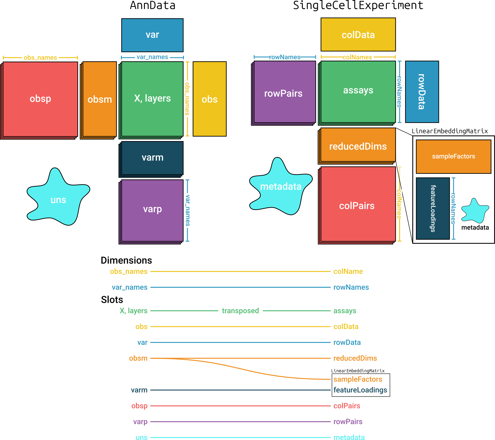

Read/write SingleCellExperiment objects using anndataR
Source:vignettes/usage_singlecellexperiment.Rmd
usage_singlecellexperiment.RmdIntroduction
This vignette demonstrates how to read and write
SingleCellExperiment objects using the anndataR
package, leveraging the interoperability between
SingleCellExperiment and the AnnData
format.
SingleCellExperiment is a widely used class for storing
single-cell data in R, especially within the Bioconductor ecosystem. anndataR
enables conversion between SingleCellExperiment objects and
AnnData objects, allowing you to leverage the strengths of
both the scverse and Bioconductor ecosystems.
Prerequisites
This vignette requires SingleCellExperiment in addition to anndataR. You can install them using the following code:
if (!requireNamespace("BiocManager", quietly = TRUE)) {
install.packages("BiocManager")
}
BiocManager::install("SingleCellExperiment")Reading H5AD files to a SingleCellExperiment
object
Using an example .h5ad file included in the package, we
will demonstrate how to read an .h5ad file and convert it
to a SingleCellExperiment object.
library(anndataR)
library(SingleCellExperiment)
#> Loading required package: SummarizedExperiment
#> Loading required package: MatrixGenerics
#> Loading required package: matrixStats
#>
#> Attaching package: 'MatrixGenerics'
#> The following objects are masked from 'package:matrixStats':
#>
#> colAlls, colAnyNAs, colAnys, colAvgsPerRowSet, colCollapse,
#> colCounts, colCummaxs, colCummins, colCumprods, colCumsums,
#> colDiffs, colIQRDiffs, colIQRs, colLogSumExps, colMadDiffs,
#> colMads, colMaxs, colMeans2, colMedians, colMins, colOrderStats,
#> colProds, colQuantiles, colRanges, colRanks, colSdDiffs, colSds,
#> colSums2, colTabulates, colVarDiffs, colVars, colWeightedMads,
#> colWeightedMeans, colWeightedMedians, colWeightedSds,
#> colWeightedVars, rowAlls, rowAnyNAs, rowAnys, rowAvgsPerColSet,
#> rowCollapse, rowCounts, rowCummaxs, rowCummins, rowCumprods,
#> rowCumsums, rowDiffs, rowIQRDiffs, rowIQRs, rowLogSumExps,
#> rowMadDiffs, rowMads, rowMaxs, rowMeans2, rowMedians, rowMins,
#> rowOrderStats, rowProds, rowQuantiles, rowRanges, rowRanks,
#> rowSdDiffs, rowSds, rowSums2, rowTabulates, rowVarDiffs, rowVars,
#> rowWeightedMads, rowWeightedMeans, rowWeightedMedians,
#> rowWeightedSds, rowWeightedVars
#> Loading required package: GenomicRanges
#> Loading required package: stats4
#> Loading required package: BiocGenerics
#> Loading required package: generics
#>
#> Attaching package: 'generics'
#> The following objects are masked from 'package:base':
#>
#> as.difftime, as.factor, as.ordered, intersect, is.element, setdiff,
#> setequal, union
#>
#> Attaching package: 'BiocGenerics'
#> The following objects are masked from 'package:stats':
#>
#> IQR, mad, sd, var, xtabs
#> The following objects are masked from 'package:base':
#>
#> anyDuplicated, aperm, append, as.data.frame, basename, cbind,
#> colnames, dirname, do.call, duplicated, eval, evalq, Filter, Find,
#> get, grep, grepl, is.unsorted, lapply, Map, mapply, match, mget,
#> order, paste, pmax, pmax.int, pmin, pmin.int, Position, rank,
#> rbind, Reduce, rownames, sapply, saveRDS, table, tapply, unique,
#> unsplit, which.max, which.min
#> Loading required package: S4Vectors
#>
#> Attaching package: 'S4Vectors'
#> The following object is masked from 'package:utils':
#>
#> findMatches
#> The following objects are masked from 'package:base':
#>
#> expand.grid, I, unname
#> Loading required package: IRanges
#> Loading required package: Seqinfo
#> Loading required package: Biobase
#> Welcome to Bioconductor
#>
#> Vignettes contain introductory material; view with
#> 'browseVignettes()'. To cite Bioconductor, see
#> 'citation("Biobase")', and for packages 'citation("pkgname")'.
#>
#> Attaching package: 'Biobase'
#> The following object is masked from 'package:MatrixGenerics':
#>
#> rowMedians
#> The following objects are masked from 'package:matrixStats':
#>
#> anyMissing, rowMedians
h5ad_file <- system.file("extdata", "example.h5ad", package = "anndataR")Read the .h5ad file as a
SingleCellExperiment object:
sce_obj <- read_h5ad(h5ad_file, as = "SingleCellExperiment")
sce_obj
#> class: SingleCellExperiment
#> dim: 100 50
#> metadata(18): Bool BoolNA ... rank_genes_groups umap
#> assays(5): counts csc_counts dense_X dense_counts X
#> rownames(100): Gene000 Gene001 ... Gene098 Gene099
#> rowData names(11): String n_cells_by_counts ... dispersions
#> dispersions_norm
#> colnames(50): Cell000 Cell001 ... Cell048 Cell049
#> colData names(11): Float FloatNA ... log1p_total_counts leiden
#> reducedDimNames(2): X_pca X_umap
#> mainExpName: NULL
#> altExpNames(0):This is equivalent to reading in the .h5ad file as an
AnnData and explicitly converting:
adata <- read_h5ad(h5ad_file)
sce <- adata$as_SingleCellExperiment()
sce
#> class: SingleCellExperiment
#> dim: 100 50
#> metadata(18): Bool BoolNA ... rank_genes_groups umap
#> assays(5): counts csc_counts dense_X dense_counts X
#> rownames(100): Gene000 Gene001 ... Gene098 Gene099
#> rowData names(11): String n_cells_by_counts ... dispersions
#> dispersions_norm
#> colnames(50): Cell000 Cell001 ... Cell048 Cell049
#> colData names(11): Float FloatNA ... log1p_total_counts leiden
#> reducedDimNames(2): X_pca X_umap
#> mainExpName: NULL
#> altExpNames(0):Mapping between AnnData and
SingleCellExperiment
Figure @ref(fig:mapping) shows the structures of the
AnnData and SingleCellExperiment objects and
how anndataR
maps between them. It is important to note that matrices in the two
objects are transposed relative to each other.

Mapping between AnnData and
SingleCellExperiment objects
By default, all items in most slots are converted using the same
names. Items in the varm slot are only converted when they
are specified in a mapping argument. See
?as_SingleCellExperiment for more details on the default
mapping.
Customizing the conversion
You can customize the conversion process by providing specific
mappings for each slot in the SingleCellExperiment
object.
Each of the mapping arguments can be provided with one of the following:
-
TRUE: all items in the slot will be copied using the default mapping -
FALSE: the slot will not be copied - A (named) character vector: the names are the names of the slot in
the
SingleCellExperimentobject, the values are the names of the slot in theAnnDataobject.
See ?as_SingleCellExperiment for more details on how to
customize the conversion process. For instance:
adata$as_SingleCellExperiment(
x_mapping = "counts",
assays_mapping = c("csc_counts"),
colData_mapping = c("Int", "IntNA"),
rowData_mapping = c(rowdata1 = "String", rowdata2 = "total_counts"),
reducedDims_mapping = list(
"pca" = c(sampleFactors = "X_pca", featureLoadings = "PCs"),
"umap" = c(sampleFactors = "X_umap")
),
colPairs_mapping = TRUE,
rowPairs_mapping = FALSE,
metadata_mapping = c(value1 = "Bool", value2 = "IntScalar")
)
#> class: SingleCellExperiment
#> dim: 100 50
#> metadata(2): value1 value2
#> assays(2): counts csc_counts
#> rownames(100): Gene000 Gene001 ... Gene098 Gene099
#> rowData names(2): rowdata1 rowdata2
#> colnames(50): Cell000 Cell001 ... Cell048 Cell049
#> colData names(2): Int IntNA
#> reducedDimNames(2): pca umap
#> mainExpName: NULL
#> altExpNames(0):The mapping arguments can also be passed directly to
read_h5ad().
Writing a SingleCellExperiment object to H5AD file
The reverse conversion is also possible, allowing you to convert a
SingleCellExperiment object back to an AnnData
object, or to just write out the SingleCellExperiment
object as an .h5ad file.
write_h5ad(sce_obj, tempfile(fileext = ".h5ad"))This is equivalent to converting the
SingleCellExperiment object to an AnnData
object and then writing it out:
adata <- as_AnnData(sce_obj)
adata$write_h5ad(tempfile(fileext = ".h5ad"))You can again customize the conversion process by providing specific
mappings for each slot in the AnnData object. For more
details, see ?as_AnnData.
Here’s an example:
as_AnnData(
sce_obj,
x_mapping = "counts",
layers_mapping = c("csc_counts"),
obs_mapping = c(metadata1 = "Int", metadata2 = "IntNA"),
var_mapping = FALSE,
obsm_mapping = list(X_pca = "X_pca", X_umap = "X_umap"),
obsp_mapping = TRUE,
uns_mapping = c("Bool", "IntScalar")
)
#> InMemoryAnnData object with n_obs × n_vars = 50 × 100
#> obs: 'metadata1', 'metadata2'
#> uns: 'Bool', 'IntScalar'
#> obsm: 'X_pca', 'X_umap'
#> varm: 'X_pca'
#> layers: 'csc_counts'
#> obsp: 'connectivities', 'distances'
#> varp: 'test_varp'The mapping arguments can also be passed directly to
write_h5ad().
Session info
sessionInfo()
#> R version 4.5.2 (2025-10-31)
#> Platform: x86_64-pc-linux-gnu
#> Running under: Ubuntu 24.04.3 LTS
#>
#> Matrix products: default
#> BLAS: /usr/lib/x86_64-linux-gnu/openblas-pthread/libblas.so.3
#> LAPACK: /usr/lib/x86_64-linux-gnu/openblas-pthread/libopenblasp-r0.3.26.so; LAPACK version 3.12.0
#>
#> locale:
#> [1] LC_CTYPE=C.UTF-8 LC_NUMERIC=C LC_TIME=C.UTF-8
#> [4] LC_COLLATE=C.UTF-8 LC_MONETARY=C.UTF-8 LC_MESSAGES=C.UTF-8
#> [7] LC_PAPER=C.UTF-8 LC_NAME=C LC_ADDRESS=C
#> [10] LC_TELEPHONE=C LC_MEASUREMENT=C.UTF-8 LC_IDENTIFICATION=C
#>
#> time zone: UTC
#> tzcode source: system (glibc)
#>
#> attached base packages:
#> [1] stats4 stats graphics grDevices utils datasets methods
#> [8] base
#>
#> other attached packages:
#> [1] SingleCellExperiment_1.32.0 SummarizedExperiment_1.40.0
#> [3] Biobase_2.70.0 GenomicRanges_1.62.1
#> [5] Seqinfo_1.0.0 IRanges_2.44.0
#> [7] S4Vectors_0.48.0 BiocGenerics_0.56.0
#> [9] generics_0.1.4 MatrixGenerics_1.22.0
#> [11] matrixStats_1.5.0 anndataR_1.1.1
#> [13] BiocStyle_2.38.0
#>
#> loaded via a namespace (and not attached):
#> [1] sass_0.4.10 SparseArray_1.10.8 lattice_0.22-7
#> [4] digest_0.6.39 magrittr_2.0.4 evaluate_1.0.5
#> [7] grid_4.5.2 bookdown_0.46 fastmap_1.2.0
#> [10] jsonlite_2.0.0 Matrix_1.7-4 BiocManager_1.30.27
#> [13] purrr_1.2.1 textshaping_1.0.4 jquerylib_0.1.4
#> [16] abind_1.4-8 cli_3.6.5 rlang_1.1.7
#> [19] XVector_0.50.0 cachem_1.1.0 DelayedArray_0.36.0
#> [22] yaml_2.3.12 otel_0.2.0 S4Arrays_1.10.1
#> [25] tools_4.5.2 Rhdf5lib_1.32.0 reticulate_1.45.0
#> [28] vctrs_0.7.1 R6_2.6.1 png_0.1-8
#> [31] lifecycle_1.0.5 rhdf5_2.54.1 fs_1.6.6
#> [34] htmlwidgets_1.6.4 ragg_1.5.0 desc_1.4.3
#> [37] pkgdown_2.2.0 bslib_0.10.0 Rcpp_1.1.1
#> [40] systemfonts_1.3.1 xfun_0.56 rhdf5filters_1.22.0
#> [43] knitr_1.51 htmltools_0.5.9 rmarkdown_2.30
#> [46] compiler_4.5.2